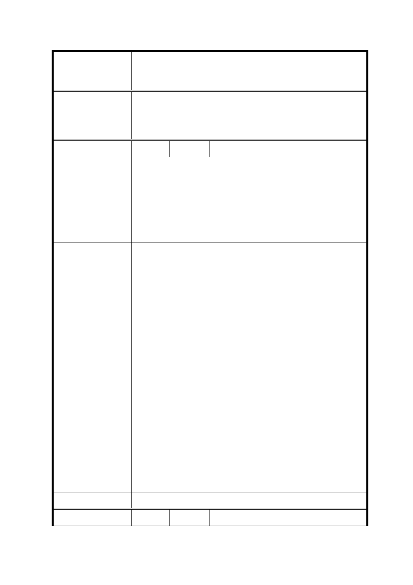

修訂臺北市信義計畫地區細部計畫（第三次通盤
案 名 檢討）案
內容，以維該文化景觀。
委 員 會 決 議 同決議二及市府回覆意見。
編
號 13
陳情人 吳○倫
第二十三項：新舞台
信義計畫區一直以來都是台北市政府重點發展的商業區，因此
陳 情 理 由 在這個有限的商業面積內應該規劃更有商業價值的空間利用，
況且個人覺得新舞台所展演的內容並不符合一般市民大眾的期
望，我相信使用率應該不高或甚至無法自給自足的經營，因此
質疑展演空間在此地的必要性。
1. 台北市政府應該為新舞台另尋表演空間的建立，不應該設立
在如此菁華的信義計畫區中心位置。而且網路上一查，其實
信義計畫區內就已經有市政府親子劇場、國際會議中心大會
堂、ATT 4 Fun、中油大樓表演廳，座位數從 1000,2000,3000
都有，市政府是不是可以重新規劃與升級信義計畫區內現有
的表演空間至國際水準，而不是幫市民設立很多設備差且使
用率低的表演空間。
建 議 辦 法 2. 再者，如果還是要新建展演空間則市政府需要完整的配套；
如國外一些中小型劇場與音樂廳皆有長駐國際水準的表演
單位如紐約百老匯與 Lincoln Center、倫敦 Shaftesbury
Avenue，市政府是否能自行引進或全力幫助、資助表演代理
公司將一些國外膾炙人口的戲劇與表演帶來台北，幫助台北
市民打開國際視野，注重於軟體與表演的提升而不應該花費
各位長官的寶貴時間為市民在信義區額外設立一個使用率
不高的表演空間。
本次通盤檢討係依 102 年 12 月 30 日｢臺北市文化資產審議委員
會第 54 次會議｣決議登錄「新舞臺」為本市文化景觀，並附帶決
市 府 回 覆 意 見 議｢於新舞臺所在基地維持原表演空間機能，未來使用如有變
更，需提送臺北市文化資產審議委員會審議｣，故配合修訂計畫
內容，以維該文化景觀。
委 員 會 決 議 同決議二及市府回覆意見。
編
號 14
陳情人 陳○昌
33